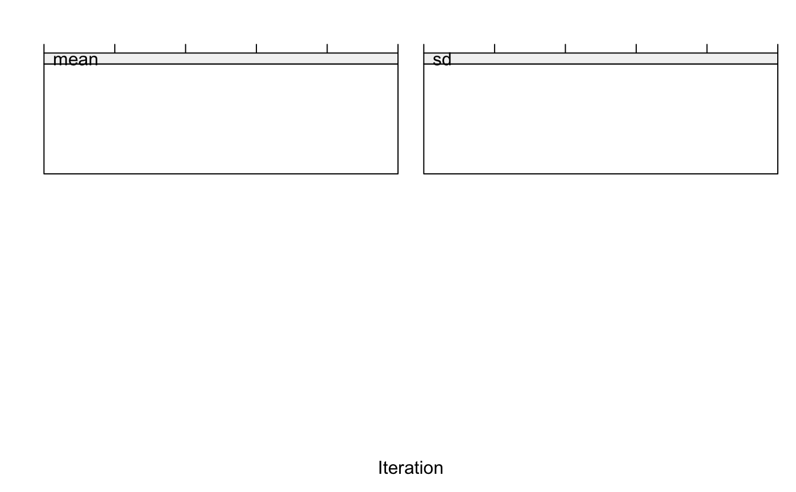

This function combines two mids objects x and y into a
single mids object, with the objective of increasing the number of
imputed data sets. If the number of imputations in x and y are
m(x) and m(y), then the combined object will have
m(x)+m(y) imputations.
ibind(x, y)
| x | A |
|---|---|
| y | A |
An S3 object of class mids
The two mids objects are required to
have the same underlying multiple imputation model and should
be fitted on the same data.
Karin Groothuis-Oudshoorn, Stef van Buuren
#> [1] 1#> [1] 3imp12 <- ibind(imp1, imp2) imp12$m#> [1] 4